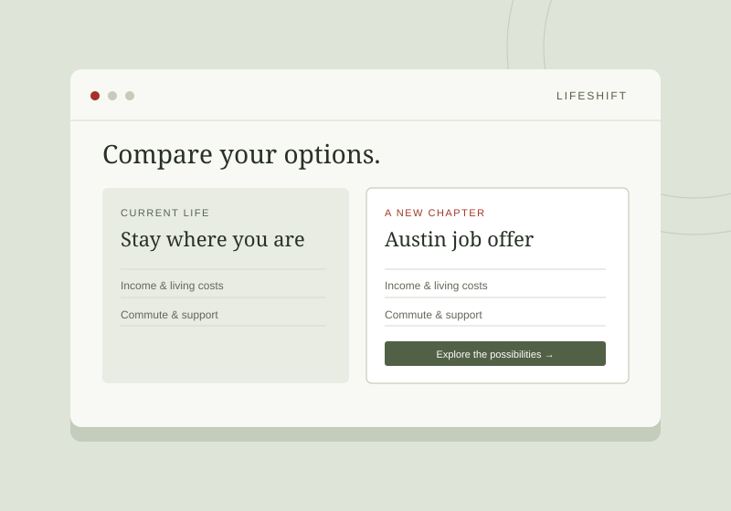
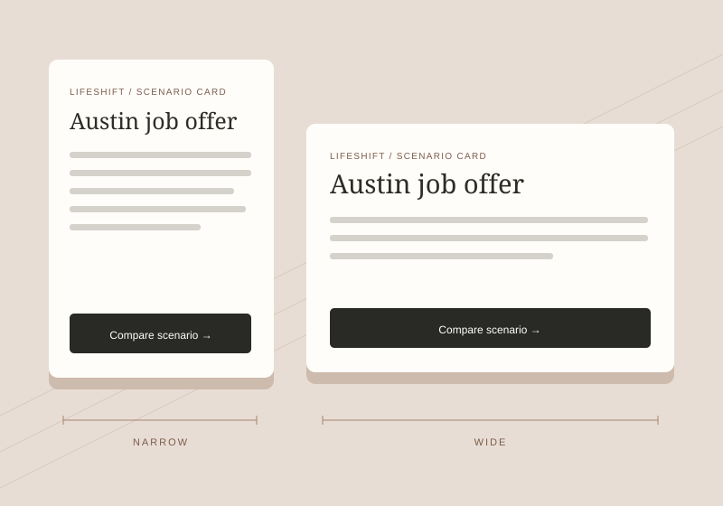
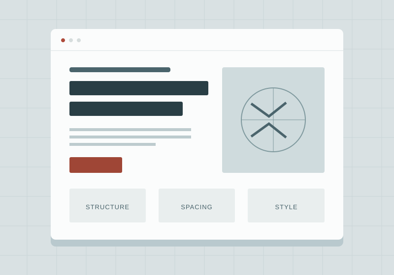

Web development
Learning to build clear, responsive pages with semantic HTML, CSS, and JavaScript.
- Python, Java, and C++
- SQL and MongoDB
- Git and GitHub
Student. Soldier. Curious builder.
Learning to turn complex problems into clear, useful experiences.
I’m a Computer Science student at Texas Tech University exploring the intersection of technology, design, and practical problem-solving.
Explore my workI enjoy understanding how things work—and finding ways to make them work better.
Alongside my studies at Texas Tech University, I serve in the U.S. Army as an Electronic Warfare Specialist. That experience has shaped how I approach a challenge: stay curious, pay attention to the details, and work well with the people around me.
I’m building my skills in web development and interface design through hands-on projects. My goal is to create digital experiences that are approachable, organized, and useful in everyday life.
A mix of technical learning
and lessons from service.
Learning to build clear, responsive pages with semantic HTML, CSS, and JavaScript.
Exploring Figma, reusable components, typography, and layouts that adapt to different screens.
Make it understandableBringing discipline, collaboration, and an interest in the electromagnetic spectrum to problem-solving.
A few recent explorations
in design and development.

A product concept that helps people compare the practical tradeoffs of a job change or relocation.
View the Figma concept
A reusable LifeShift card that keeps its content organized as the available space changes.
Explore the component
A hands-on HTML and CSS exercise exploring how layout, spacing, and visual hierarchy work together.
Open the web exercise